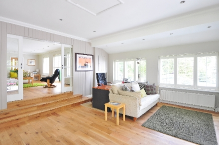

In the scope of this data cleaning project conducted within SQL Server, our primary goal was to elevate the usability of raw housing data. Through meticulous SQL queries and transformations, we addressed issues such as missing or inconsistent data, standardized formats, and resolved anomalies, ultimately creating a clean and well-organized dataset.
I developed a comprehensive Excel project focused on optimizing coffee sales analysis.The implementation of advanced functions allows for the calculation of total sales trends over time, providing invaluable insights into revenue patterns.
In the framework of SQL Server-driven data exploration, this involved a thorough examination of COVID-19 data points, encompassing aspects such as infection rates, mortality rates, recovery rates, and vaccination statistics. Through SQL queries, we dissected the dataset, applying filters and aggregations to isolate relevant information related to Nigeria, Africa, and the global landscape.

An Airbnb project executed in Tableau, our focus was on creating a dynamic and insightful visualization that provides a comprehensive breakdown of Airbnb data. Specifically, we meticulously dissected the information based on three key dimensions: year, zip code, and the number of bedrooms in each listing.
This project focused on analyzing bike sales with respect to gender, region, occupation, and income, we employed a multifaceted approach that integrated data cleaning, pivot tables, and the development of a comprehensive Excel dashboard.
A Data survey project focused on gathering insights into the data analysis tools preferred by professionals in the field. Power BI allowed us to seamlessly connect, clean, and transform the survey data, enabling a clear and concise representation of the findings.

Leveraging the versatility of Python, we engineered an intuitive BMI calculator that seamlessly incorporates user inputs for height and weight. The algorithm considers these parameters to calculate the Body Mass Index (BMI), providing a reliable indicator of body fat percentage.
An advance python project focused on eCommerce web scraping, we developed a sophisticated web scraper leveraging the power of BeautifulSoup and Pandas. The objective was to create an efficient tool for extracting and manipulating data from eCommerce websites, facilitating seamless integration into data analysis pipelines.